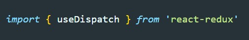
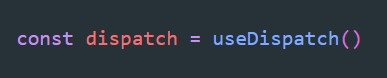
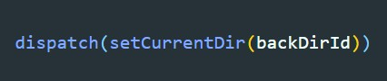

Для работы с этим хуком нам понадобиться библиотека react-redux
Что бы получить диспетчер, просто вызываем useDispatch и результат помещаем в переменную. Результатом будет функция диспетчер
Так как диспатчить мы должны action, то и диспетчеру мы передаем actionCreator
